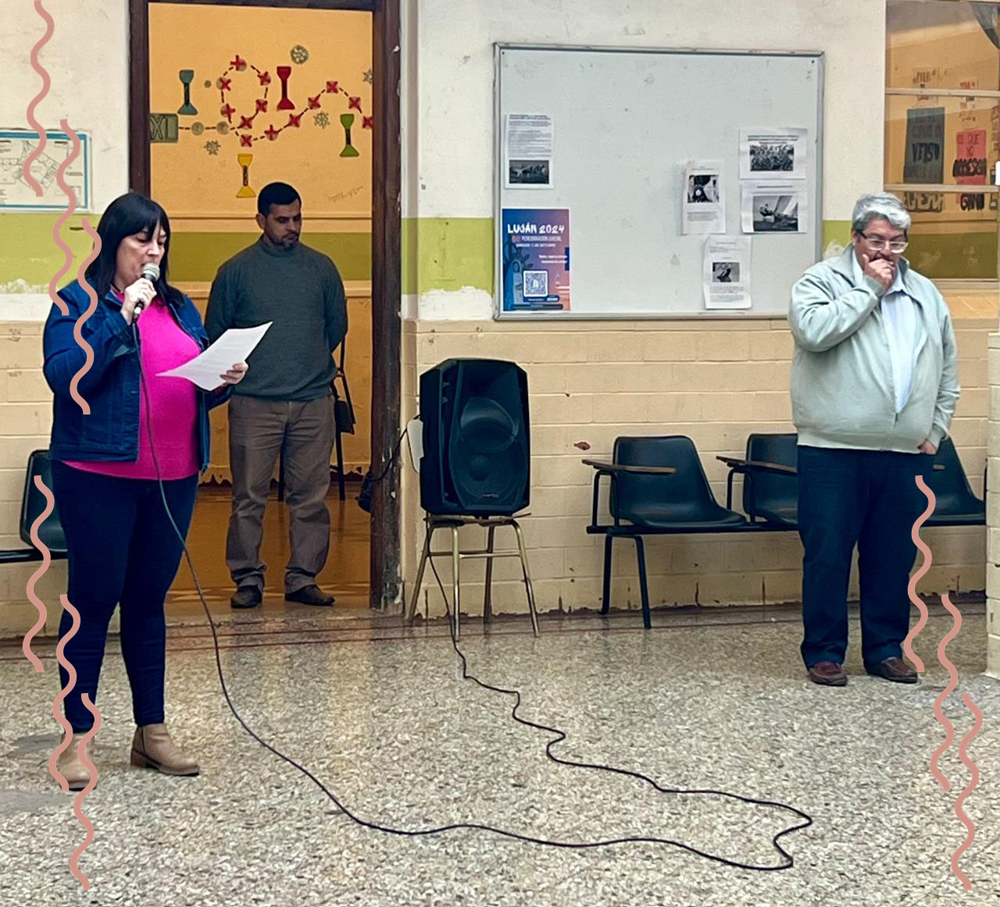

Estimadas autoridades, queridos colegas y queridos estudiantes: Es un honor dirigirme a ustedes en este día tan especial, en el que celebramos el Día del Profesor. Hoy, 17 de septiembre, no solo es una ocasión para expresar nuestro agradecimiento a quienes nos guían en el camino del conocimiento, sino también un momento para reflexionar sobre el rol fundamental que desempeñan los docentes en la formación de nuestras futuras generaciones. Esta fecha nos invita a recordar y rendir homenaje a una figura insigne de la educación argentina: José Manuel Estrada. Estrada, un ferviente defensor de la educación pública, fue un destacado educador, escritor, político y periodista que luchó incansablemente por la educación como un derecho fundamental y un pilar esencial para el desarrollo de una sociedad justa y equitativa. Nacido el 13 de julio de 1842, dedicó su vida a la defensa de la enseñanza y a la promoción de valores éticos y morales, convirtiéndose en un modelo a seguir para todos nosotros. El 17 de septiembre, fecha de su fallecimiento en 1894, fue elegido para conmemorar el Día del Profesor en Argentina como un reconocimiento a su invaluable aporte a la educación y su firme defensa de la libertad de pensamiento. Estrada no solo fue un brillante académico, sino también un defensor incansable de la educación pública, un principio que hoy en día sigue siendo un pilar fundamental de nuestro sistema educativo. Este día no es solo para agradecer y reconocer el trabajo de quienes día a día se entregan con dedicación y pasión a la enseñanza. También es una oportunidad para renovar nuestro compromiso con nuestros estudiantes, con la comunidad educativa y con nosotros mismos. Es el momento de reafirmar nuestra misión de ser faros de conocimiento, ética y valores en un mundo que requiere cada vez más de ciudadanos críticos, responsables y solidarios. Ser profesor/a es mucho más que impartir conocimientos; es una vocación que abraza desafíos, aprendizajes mutuos y crecimiento. Cada día que entramos al aula, lo hacemos con el anhelo de encender en ustedes una chispa: la chispa de la curiosidad, el deseo de superarse y de descubrir sus pasiones. Porque, más allá de las materias que enseñamos, nuestro verdadero objetivo es ayudarlos a encontrar su camino, a que se conozcan mejor y a que sueñen sin límites. Sabemos que la escuela puede ser un reto, que no siempre es fácil enfrentar las exigencias y las incertidumbres. Pero aquí estamos, para caminar a su lado, para apoyarlos en esos momentos difíciles y celebrar con ustedes los logros, por pequeños que parezcan. Aprendemos tanto de ustedes como ustedes de nosotros, y ese intercambio es lo que hace de esta profesión algo único e irremplazable. Ser profesor/a es un compromiso y una pasión que va más allá de los libros y las evaluaciones. Es tener la certeza de que, en cada clase, sembramos semillas que tal vez no veamos florecer hoy, pero que sabemos que en el futuro crecerán. Ustedes, queridos alumnos y alumnas, son esa promesa de un mañana mejor, y cada uno de ustedes tiene dentro de sí un potencial enorme que juntos descubrimos y nutrimos. A ustedes queremos darles las gracias por permitirnos ser parte de su historia, por aceptar nuestros desafíos y por enseñarnos, con su energía y sus sueños, que el futuro siempre puede ser más brillante. A mis colegas, quiero expresarles mi más sincera admiración. Sé que enseñar no es una tarea fácil. Requiere paciencia, creatividad y, sobre todo, un profundo amor por lo que hacemos. Nos enfrentamos a desafíos constantes, pero también tenemos el privilegio de ser testigos del crecimiento y la transformación de nuestros estudiantes. Esa es nuestra mayor recompensa. Finalmente, a las autoridades presentes, les agradezco por su apoyo y por reconocer la importancia de nuestro trabajo. Les pido que continúen brindando los recursos y las condiciones necesarias para que la educación siga siendo un motor de cambio y progreso en nuestra sociedad. Que este día sea una celebración de la enseñanza y del aprendizaje, de la dedicación y del compromiso. Que todos nosotros, desde nuestras distintas responsabilidades, sigamos trabajando juntos para construir un futuro mejor, donde la educación siga siendo la llave que abre las puertas del conocimiento y la libertad. En este día tan especial, honremos la memoria de José Manuel Estrada y celebremos la labor de todos los profesores, quienes con su trabajo constante y su pasión por la enseñanza, construyen el futuro de nuestra sociedad. ¡Feliz día del Profesor a todos/as! ¡Muchas gracias!
